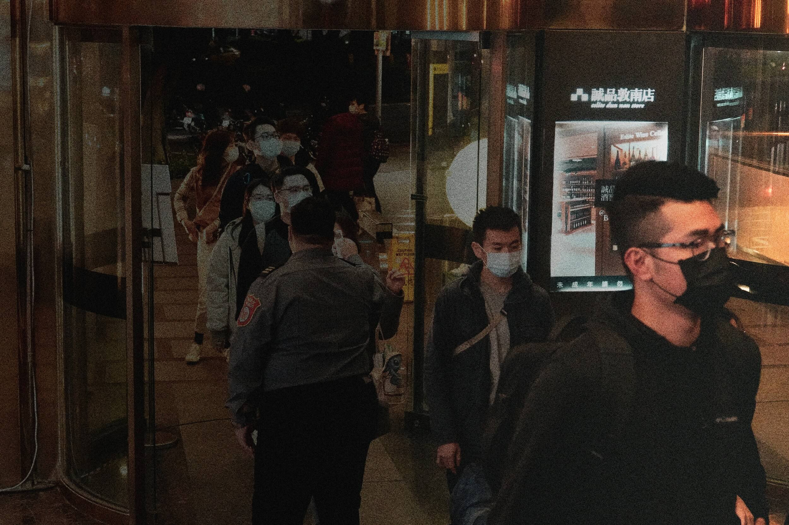
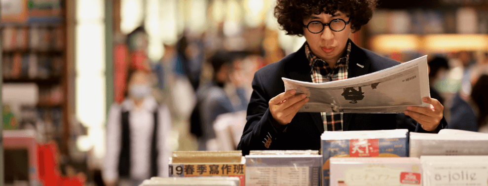
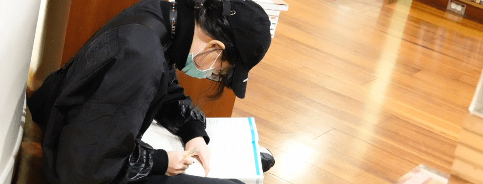

誠品社會學：時代轉角的書店
誠品社會學：掀後解嚴台灣思潮
「誠品是日常的出國」
誠品敦南店為台灣一整個世代帶來文化思潮的改變，《蘋果新聞網》訪問作家與學者，用社會學的角度解釋誠品帶給我們的衝擊。由外來看，她處於時代的轉角，讓後解嚴的台灣得以窺見國外思想啟蒙；由內來看，書店就像個小型社會，每個人在此相遇、交流，譜出自己心中美好而唯一的誠品敦南。

解嚴後引進歐美雜誌 張鐵志：我的知識樂園
80年代後期台灣解嚴，社會運動風起雲湧，支持台灣民主化的鄭南榕為言論自由自焚而亡、野百合學運中近6千名大學生靜坐抗議「萬年國會」、廢除動員戡亂臨時條款。台灣正處動盪時代，在禁忌與自由間摸索界線。
社會學家李明璁當時正值16歲，夾在時代交錯的縫隙裡，既期待又害怕。「我們青春在轉大人，台灣也正在轉大人，從一個不自由的社會，邁向一個自由的社會。」在成長的陣痛期裡，1989年仁愛圓環誠品誕生，給亟欲呼吸自由空氣的台灣人，看見世界的機會。
當時台灣知識封閉，缺乏各種書籍、電影，誠品卻大量引進外文書、歐美雜誌，力求跟世界同步。「誠品就是我日常的出國。」李明璁回憶，年少時還沒錢出國，誠品就是他瞭望世界的窗口，讓他活在比現實更大的想像世界裡。最近做的夢，是去一趟加勒比海上的古巴，他在誠品買了許多古巴相關的書籍，從畫冊、攝影集、詩集，先在那想像世界裡窺探自己的夢。
誠品在許多人的生命裡，都曾扮演重要的角色，「像是在那邊找到第一本危險的書，讓人生開始有冒險的可能。」不只李明璁如此，導演魏德聖在誠品翻到霧社事件書籍，催生榮獲金馬獎的史詩電影《賽德克·巴萊》；作家馬欣在誠品遇見作家米蘭昆德拉的《緩慢》，影響她後續作品裡暗藏的哲學嘲諷。
文化評論家張鐵志也是受到誠品啟蒙的人之一。1989年，誠品在仁愛圓環盛大開幕，那一年他17歲，渴求知識、熱衷社運，誠品成為他的知識樂園，他開始接觸西方哲學、女性主義、批判性理論。「你可以感受到他（誠品）的生猛與野性。」他在誠品裡看書、戀愛，甚至失戀，「那（誠品）是伴隨青春的回憶。」

誠品成心靈庇護所 深夜社會學、音樂會共構台灣人記憶
24小時不熄燈的誠品敦南，是許多人的庇護所。你會在書店角落看見埋頭唸書抄筆記的人、拖著行李箱昏昏欲睡的人、因失戀而泫然欲泣的人。
在壓抑的年代，敦南也是同志的聚集地，兩人以書試探，尋求彼此的慰藉。甚至有則都市傳說，你在書店留下鈕扣作為暗號，若有人撿起便代表他也心儀於你，兩人就能來場美麗的邂逅。
「它讓書店不只是個買賣的場所，而是人與人交流互動的地方。」李明璁曾在晚上舉辦過一系列的深夜社會學講堂，明明主題深硬，卻還擠滿幾10人，辛苦地罰站兩小時。
對過往只在課堂教書的大學教授李明璁而言，「我覺得非常不可思議，但也能理解的社會需求。」讓他開始反思社會學的初衷，不就是要站在人群裡，跟社會溝通一起前進。
誠品敦南創造了對話的場域，透過舉辦講堂、音樂會、藝術表演，讓書店像個博物館，許多人在這發現新大陸，跟他喜歡的人相遇。這樣的美好記憶不限於90年代的台北人，而是每個世代的台灣人。
李明璁認為，每一個曾在敦南停留的人，乃至於它的時代意義，共構了它無可取代的場所感，因此誠品敦南熄燈令他特別失落。（劉怡馨、林奐成／台北報導）